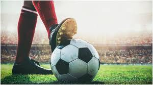
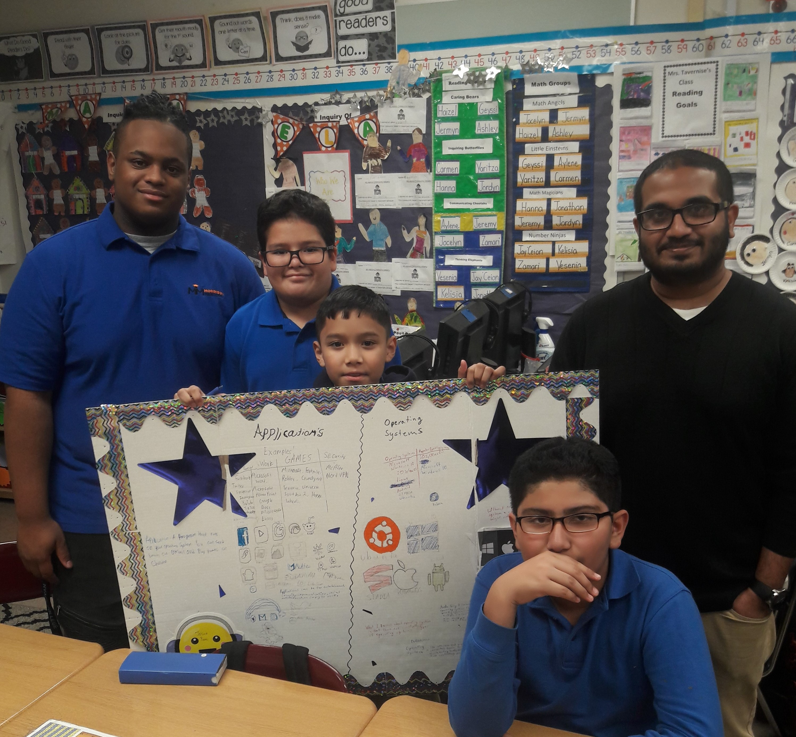
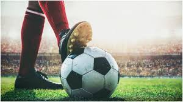
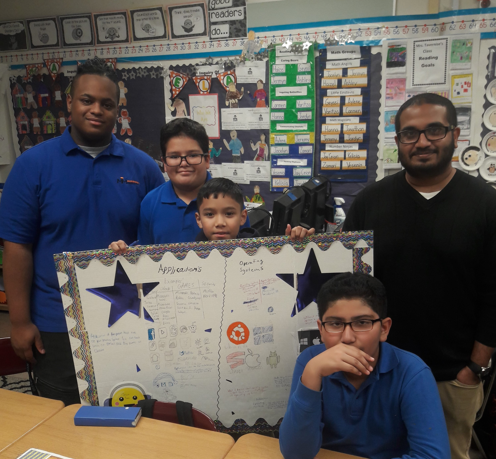

- Home
- About Me
-
My favorite things to do is,one helping people out with problems they are having trouble with or helping them in situations they're in.
For example:My next door neighbors were doing some cleaning so I asked if they needed some help with the heavy garbage they had, they said sure that I could help.
They gave me some gloves and I started helping them.
-
Another thing I like to do is play sports.One of my favorite sports is soccer,I am training to play on a team it's fun to play soccer you have to try a sport.
You don't do better from doing nothing practice everyday it helps you to improve.
-
My favorite subject is social studies and ELA. I love reading because it's easier than math and science.
I like social studies because it's easier than science but not math,some people might say this problem is easy but I don't really understand math,the problem was 12-9+c=12.
-
My favorite game is minecraft pe,it allows me to build and explore my imagination. Minecraft helps me get rid of stress I have but for other people that's not the case.
-
I go to an after school program it's the best decision I've made.
The after school program is called stem/morrison mentors it's the program that is showing me how to make this.
I am in 6th and love this program. Today 2/24/2020 I learned about mass and buoyancy.
We tested different objects to see how much mass they have and buoyancy,learned this in MM/Morrison Mentors.
 


